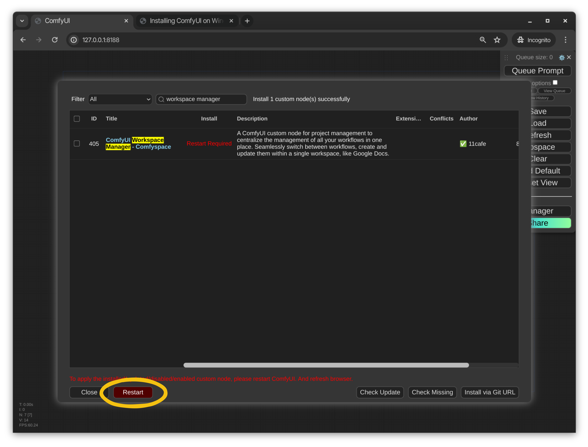
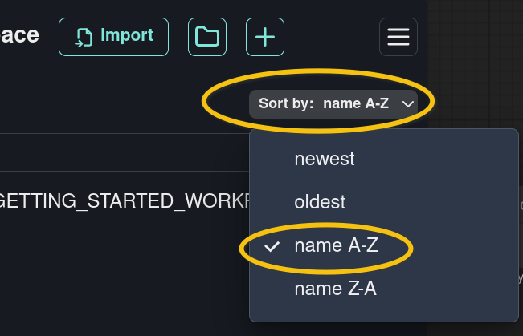

INSTALLING COMFYSPACE
The ComfyUI-Workspace-Manager (also known as Comfyspace) is a ComfyUI plug-in that makes managing multiple ComfyUI documents (known as workflows) a lot easier.
Once Comfypace is installed, we will import some workflows required for this course into our workspace.
This document will guide you through the steps required to install Comfyspace in your ComfyUI installation.
INSTALL COMFYSPACE
OPEN MANAGER
Toolbar -> Manager
|
|
If the Manager button is not present, make sure the ComfyUI-Manager plug-in is installed.
OPEN THE CUSTOM NODES MANAGER
Click on Custom Nodes Manager.
|
|
SEARCH FOR COMFYSPACE
In the search box, search for comfyspace.
|
|
ComfyUI Workspace Manager-Comfyspace by 11cafe appears in the search results.
INSTALL COMFYSPACE
Click on the Install button.
|
|
The Custom Nodes Manager installs Comfyspace in our ComfyUI
installation under ComfyUI/custom_nodes/comfyui-workspace-manager
RESTART COMFYUI
Click on the Restart button.
|

|
CONFIRM THE REBOOT
Click on OK.
|
|
The ComfyUI Server restarts.
Observe the reboot process in the Terminal where ComfyUI was started.
If the ComfyUI Server fails to restart automatically, stop the server and relaunch it manually.
REFRESH THE COMFYUI INTERFACE PAGE
In your web browser, with the ComfyUI page loaded, press the Refresh button.
|
|
Comfyspace is now visible at the top left of the ComfyUI interface page.
DOWNLOAD THE 'GETTING STARTED' WORKFLOWS
DOWNLOAD THE 'GETTING STARTED' WORKFLOWS
.
UNZIP THE FOLDER
In a File Browser (Explorer, Finder, Nautilus, etc...) locate pxf_comfyui_getting_started.zip and extract the contents of the .zip file.
.
IMPORT THE 'GETTING STARTED' WORKFLOWS
OPEN COMFYSPACE
Comfyspace Toolbar -> Folder icon.
|

|
IMPORT A FOLDER
Import -> Import Folder.
|
|
UPLOAD THE 'GETTING STARTED' WORKFLOWS FOLDER
Locate the 01_GETTING_STARTED_WORKFLOWS folder that was extracted from the .zip file earlier.
Click on Upload.
|
|
SORT BY NAME
Choose Sort by: -> name A-Z
|

|
The "getting started" files are uploaded to the ComfyUI server and added to Comfyspace.
Comfyspace saves workflows to ComfyUI/my_workflows.
FINAL CHECKLIST...
Can you access the tutorial workflows from Comfyspace?
Yes. The Workflows directory was imported sucessfully.